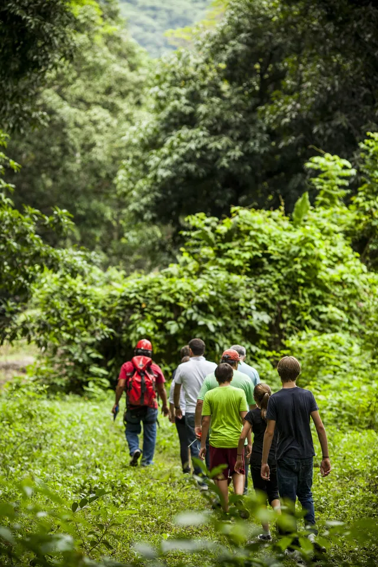

Esta actividad es una de las que más me encanta hacer pues me reuno con mis amigos y vamos a explorar los increibles cerros que rodean a Jalcomulco, me encanta perderme en la naturaleza, respirar el aire fresco y escuchar los sonidos de las aves, que me voy encontrando en el camino, por lo regular me encuentro con muchos tucanes, suelo hacer senderismo la mayor parte del año, pero trato de evitarla en temporada de lluvias, pues suele haber algunos deslaves o el camino muy resbaloso.
Su nombre viene del náhuatl “Xalkomolko”, “xalli” significa arena y “komol” es olla o agujero; mientras que “ko” significa en. Por lo tanto, su nombre significaría “En el rincón de la arena”. Se localiza a 29 km, (18 millas), de Xalapa, la capital del estado y a 359 km, (223 millas) de la Ciudad de México. Cuenta con una altitud de 340 m s. n. m.